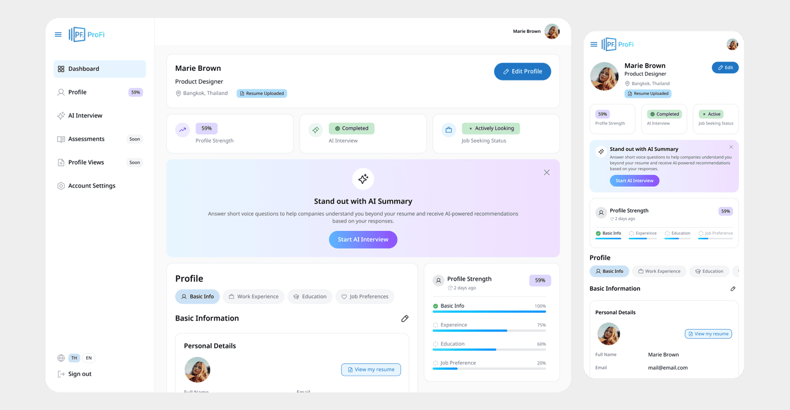
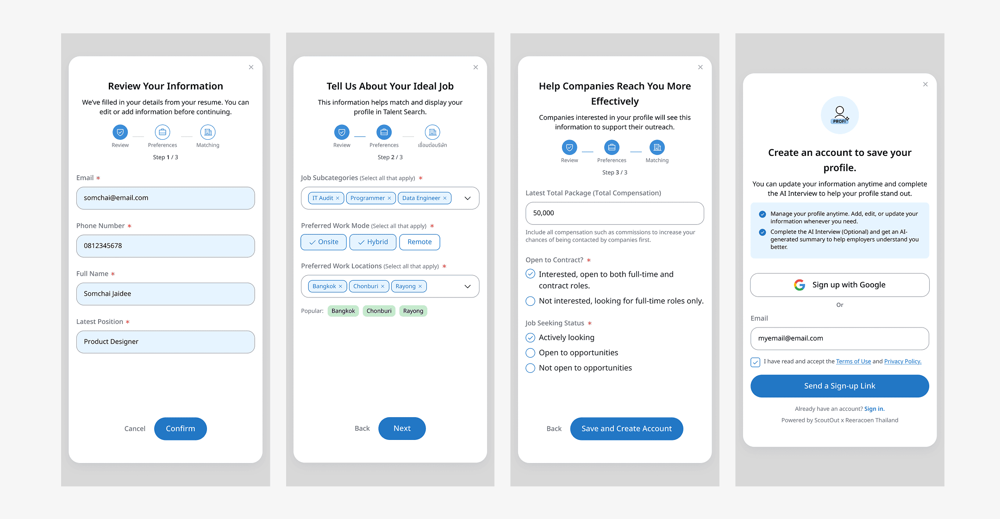
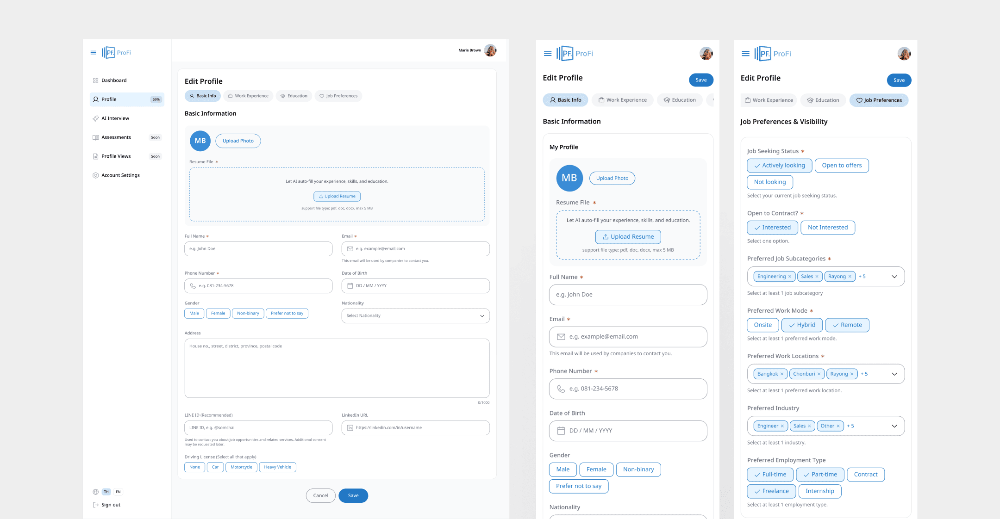
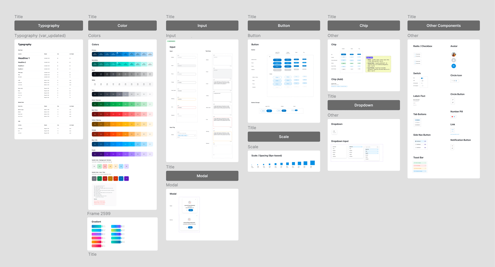

01. Overview
ProFi helps candidates create and maintain a structured profile that companies can discover through ProFinder. The experience continues after résumé upload: candidates review résumé-derived information, add their work preferences, monitor profile completeness, and update their profile over time.
The design covers a three-step onboarding flow and a responsive profile dashboard. The dashboard brings together profile readiness, AI Interview, job-search status, and profile sections for basic information, work experience, education, and job preferences and visibility.

02. Problem
Uploading a résumé creates the starting point for a candidate profile, but the information needs to be accurate, complete, and relevant before companies can find a suitable match. Candidates also need a way to update their details and preferences as their circumstances change.
The design challenge was to turn profile management into a clear, ongoing experience—not a one-time form—while helping candidates understand how their information supports discovery through ProFinder.

03. Key UX Challenges
The challenge was to turn résumé information into a profile candidates can trust, complete, and keep up to date—while making clear how their preferences support employer discovery.
Review information extracted from a résumé
Candidates need to verify and correct information the system has filled in, without having to start from a blank profile.
Capture preferences that support profile discovery
Desired work types, locations, and job preferences help define which searches may surface a profile. These need to be easy to understand and update..
Make profile completeness actionable
A completion score is useful only if candidates can see which sections need attention and navigate directly to them.
Support detailed profile editing
Work history, education, and certifications contain multiple entries and fields. The interface needs to support reviewing, adding, and editing this information without making the profile feel like one long form.
Explain visibility and job-search status
Candidates should be able to manage their preferences and job-search status while understanding how those choices relate to employer discovery.

04. Design Process
I designed the journey from reviewing résumé-derived details to managing a complete profile, focusing on clear steps, useful progress cues, and simple editing across desktop and mobile.
Map the candidate’s profile journey
I structured the experience around the journey from résumé data to a maintained profile:
résumé details → Set job preferences → Complete onboarding → Monitor profile readiness → Edit profile and visibility settings
This helped connect onboarding to the dashboard: the information candidates provide during setup becomes the information they can review and manage later.
Organize onboarding into three focused steps
The onboarding flow guides candidates through three focused tasks: confirming and editing résumé-derived information, setting preferences for work arrangements and locations, and sharing job-search details and status. A progress indicator shows how far they’ve come, while supporting text explains how their preferences help companies find their profile in Talent Search.
Design the dashboard around progress and next actions
I organized the dashboard to give candidates a quick view of their profile, profile readiness, AI Interview, and job-search status. A section-by-section progress summary links profile completeness to Basic Info, Experience, Education, and Job Preference.
Design profile sections for reviewing and editing
I separated detailed information into focused sections: Basic Information, Career & Work Experience, Education & Certifications, and Job Preferences & Visibility.
For each section, I considered how users review existing information, make changes, and handle multiple entries. I also designed supporting states such as edit mode, dropdowns, profile sections with incomplete information, and confirmation dialogs for discarding or removing changes.
Adapt key workflows for desktop and mobile
I used responsive layouts to preserve the same core tasks across screen sizes: check profile progress, navigate between sections, update information, and manage account settings. On smaller screens, the content and navigation are adapted to fit a narrower, vertically scrolling layout.
Build an AI-assisted prototype
I used Codex and Figma MCP to translate the approved interface into an interactive HTML/CSS prototype. This helped me test responsive layouts, navigation, and profile-management interactions quickly, compare the coded experience with the Figma design, and refine gaps before developer handoff.

05. Solution & Results
I designed a connected profile-management experience that guides candidates from reviewing résumé details and setting job preferences to maintaining their profile over time. The dashboard highlights profile completeness and links to focused sections for personal information, work experience, education, and job preferences and visibility. It also provides clear states for AI Interview, Assessments, and Profile Views, alongside account controls.
The design gives candidates a clearer way to keep their profiles accurate and discoverable through ProFinder. Add measured product impact, such as onboarding completion or profile-section completion, if live results are available.